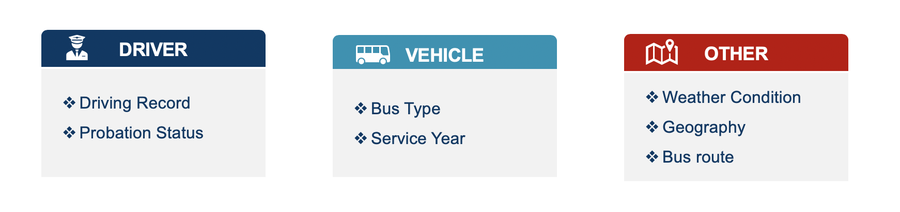
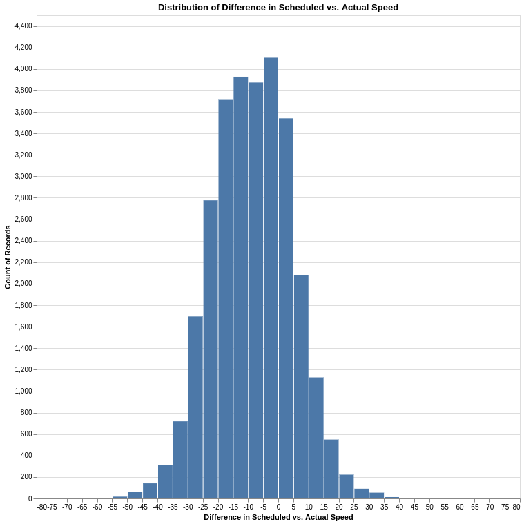
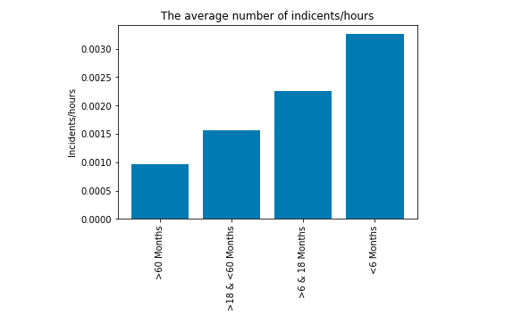

Insurance premium is one of the largest spendings in TransLink's budget
In the past five years, claim costs have increased by about 122.5%
Therefore, we have been asked to find:
potential strong predictors of claim severity/frequency that TransLink can leverage to help reduce costs
Research Questions
What are the main predictors of the frequency and severity of bus accidents?

Research Questions (cont)
Within specific categorical features (such as claim type codes), are there specific clusters or groupings that are particularly noteworthy for having worse or better claims/accident experience?
High Level Data Descriptions
Bus Speeds for All Routes, Route Information
Actual Incidient Reports
Collisions (Preventable and Non-Preventable)
Claims
Bus Speeds & Route Information

Actual Incidient Reports

Collisions
Claims
Data Product
A reproducible, interactive report that allows the reader to:
visualize relationships between claim frequency/severity and specific variables interactively
Data Product (cont)
A fully reproducible data pipeline
user-friendly way to run the entire data analysis front to back using simple Make commands
stored on a Docker container
detailed documentation describing how to run the analysis and the code
Methodology
Join the Collision and Incident Operators datasets with respect to some id (if given) and then split the whole dataset into test and train datasets
Exploratory Data Analysis on the resulting training set (visualizations to assess potential predictors of interest such as density plots, boxplots, barcharts, etc.)
Methodology (cont)
If complete data is provided, a regression model on incident rate/year based off driver characteristics, time of day, etc.
A Bayesian regression model to address the problem of truncation in the Incident Operators dataset or a Zero-Truncated Model (if complete data is not provided)
Cluster Analysis for analysis of specific categorical features like claim type code, claim description (Markov Chains, LDA, DBSCAN)